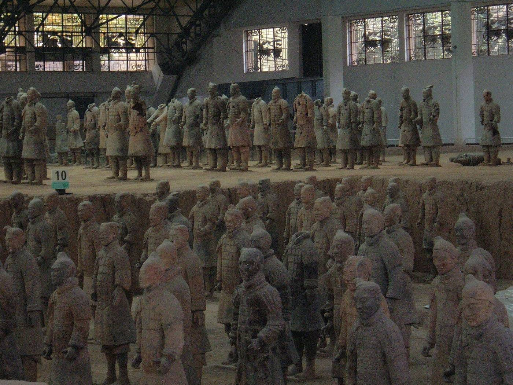
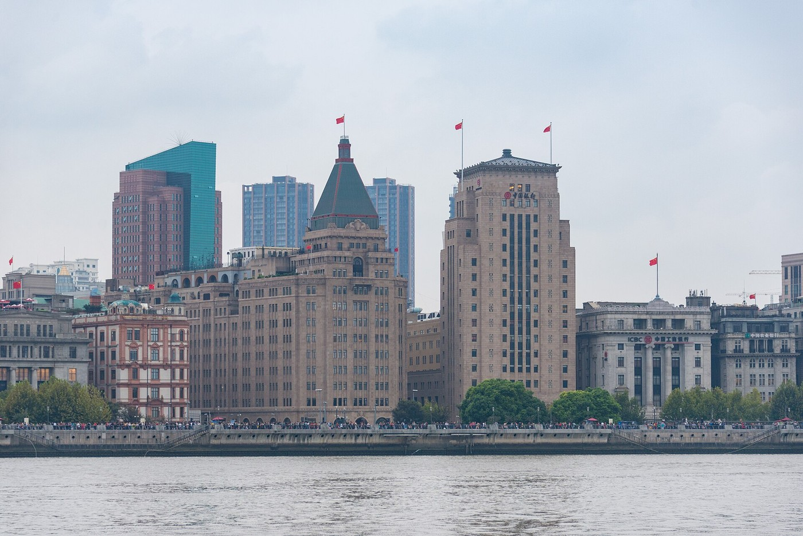

Photo: BrokenSphere · Wikimedia Commons · CC BY-SA 3.0
Unit 4 of 8
History in Four Turning Points
China's capital moved many times over 2,100 years. Hangzhou had its turn about 800 years ago.
- what a dynasty is, and how China's capital moved
- when Hangzhou was the capital, and how big it grew
- how Shanghai became China's biggest city
- how the economy changed after 1978
- Dynasty
- A family that rules a country for generations, until another family takes over.
- Capital
- The city where the country's rulers and government are based.
- Port
- A city with a harbor where ships load and unload trade goods.
- Special economic zone
- An area with looser rules for trade and foreign investment.
4.1 Turning point 1: dynasties and moving capitals
For about 2,100 years, from 221 BC to 1912, China was ruled by emperors, one dynasty after another. Each dynasty picked its capital, and when power changed hands, the capital often moved.
| Dynasty | Years | Capital | Remember it for |
|---|---|---|---|
| Qin | 221–206 BC | Xianyang, near Xi'an | First to unite China; one system of writing, coins and weights |
| Han | 206 BC–AD 220 | Chang'an (Xi'an), later Luoyang | Paper; the Silk Road trade routes |
| Sui | 581–618 | Chang'an, then Luoyang from 605 | Built the Grand Canal, 604–609 |
| Tang | 618–907 | Chang'an | Chang'an was the world's most populous city for much of this era |
| Northern Song | 960–1127 | Kaifeng | First government paper money |
| Southern Song | 1127–1279 | Lin'an, today's Hangzhou | Hangzhou's golden age |
| Yuan | 1271–1368 | Dadu, today's Beijing | Founded by Kublai Khan |
| Ming | 1368–1644 | Nanjing, then Beijing from 1420 | Built the Forbidden City, 1406–1420 |
| Qing | 1644–1912 | Beijing | The last dynasty |
Tap a column heading to sort.
4.2 Hangzhou's turn as capital
In the 1100s the Song rulers moved south to Hangzhou, which they called Lin'an. The city boomed. It grew from about 200,000 people in the early 1100s to about 500,000 by 1170 and over 1 million by about 1270, and it was probably the largest city in the world from about 1180 to 1315.
The Italian traveler Marco Polo came after the Song fell. He called the city Kinsay, said the name meant "City of Heaven," and claimed it had 12,000 stone bridges. Historians think he exaggerated its size.

4.3 Turning point 2: Shanghai becomes a trade port
Shanghai opened to foreign trade on 17 November 1843. Within ten years it handled more than half of China's foreign trade. It sits at the mouth of the Yangtze, so goods from the whole river basin pass through it.
Shanghai had about 412,000 people in 1895, about 3 million by the 1930s, and about 24.9 million in 2023. Today it is China's biggest urban area.

.jpg){kind=link}
4.4 Turning point 3: 1949
The People's Republic of China was founded on 1 October 1949, in Beijing. The date is now National Day, the start of a week-long holiday every October.
4.5 Turning point 4: the economic opening of 1978
Starting in December 1978, China changed how its economy worked. Farm families could work their own plots and sell extra crops. People could start private businesses. Foreign companies were invited to invest.
One test case was Shenzhen, next to Hong Kong. On 26 August 1980 it became one of China's first four special economic zones.
How fast did Shenzhen grow?
- End of 1980: about 333,000 people. End of 2025: 18.24 million.
- 18,240,000 ÷ 333,000 ≈ 55.
- That's like a city a bit bigger than Pittsburgh growing to about nine-tenths of the population of New York State.
Shenzhen is about 55 times bigger than it was 45 years ago.
The whole country grew too. China's economy was worth about $150 billion in 1978 and about $19.5 trillion in 2025, roughly 130 times bigger. The World Bank says growth averaged more than 9% a year and lifted almost 800 million people out of extreme poverty.
Check your understanding
- Which dynasty made Hangzhou its capital, and about when?
Show answer
The Southern Song, from the 1130s until 1276, when the Mongols took the city.
- What did Marco Polo call Hangzhou?
Show answer
Kinsay, which he said meant "City of Heaven."
- Why did Shanghai grow so fast after 1843?
Show answer
It opened to foreign trade, and its spot at the mouth of the Yangtze put the trade of the whole river basin through its port.
- About how many times bigger is China's economy now than in 1978?
Show answer
About 130 times.
Sources
- Wikipedia: Dynasties in Chinese history
- Qin, Han, Sui, Tang, Song, Yuan, Ming (Wikipedia)
- Wikipedia: Forbidden City and Wikipedia: Grand Canal
- Wikipedia: Hangzhou (history)
- Fordham Medieval Sourcebook: Marco Polo on Kinsay
- Shanghai Daily: the open port and NBER working paper w17754
- Wikipedia: Timeline of Shanghai and Wikipedia: Shanghai
- Wikipedia: National Day
- Wikipedia: Reform and opening-up and China Daily: Shenzhen at 40
- Wikipedia: Demographics of Shenzhen and Amazing Shenzhen: 2025 population
- World Bank: China GDP and World Bank: China overview